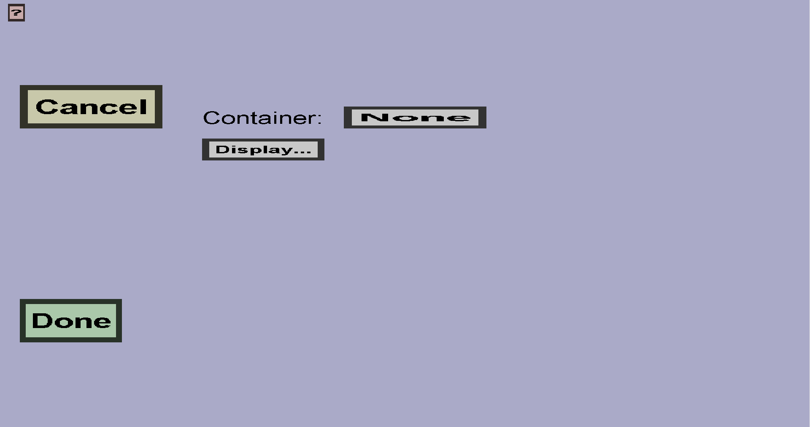

The link slot menu can be used to create link slots for a custom container. Every link slot has a target container. Whenever a player clicks on a link slot, he will close his current custom container and open the target container. This menu should look like this:
The Target container: when a player clicks on this slot, he will open that container. Note: if the target container requires permission, the player will need that permission. Also, the target container must have the same host as this container.
The Display determines what this slot will look like. If you don't choose a display, it will look like en empty slot.